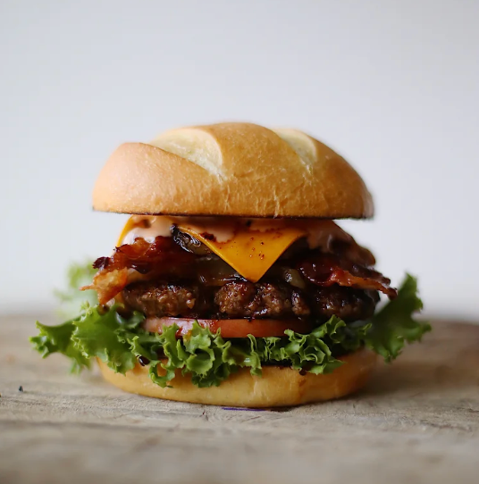

Quick Take
The Vibe: Laid-back Hawaiian surf shop aesthetic meets serious burger joint.
Best For: Experiencing the incredible chewy sandwich buns and legendary home fries.
Standout: The Sterling Chicken Sandwich bathed in teriyaki glaze and lemon garlic aioli.
The Review
If you’ve ever found yourself wandering through SanTan Village wondering if you can find a meal that feels like a hug from a professional surfer, your search is over. Welcome to Seven Brothers, where the vibes are as laid-back as a North Shore afternoon and the food is serious enough to make you consider moving to Oahu.
At the Desert Dining Guide, we’re always looking for that "X-factor" that separates a good meal from a "I need to tell my therapist about this" meal. Seven Brothers has it in spades.

The Bread That Dreams Are Made Of
Let’s talk about the Sterling Chicken Sandwich. In a world full of sad, dry chicken breasts on supermarket buns, this sandwich is a literal overachiever.
The first thing you’ll notice—and the thing we absolutely loved—is the bread. It’s not your standard brioche, and it’s definitely not a basic white bun. It’s incredibly soft, perfectly chewy, and has enough structural integrity to hold back a tidal wave of sauce. It’s a unique twist that sets their sandwiches apart from the rest of the pack.
The chicken itself is bathed in a teriyaki glaze and topped with a lemon garlic aioli that is so good, it should probably be illegal in at least three states.

Fries: Not Your Average Potatoes
If you order fries here expecting the usual "sticks of salt," prepare for a pleasant surprise. Seven Brothers serves Home Fries, which are actually thin, crispy potato discs.
It’s a bold move to redefine the French Fry, but it pays off. They have more surface area for crunch, and more importantly, they are the perfect vessel for their Fry Sauce. Speaking of the sauce—it’s legendary. It’s creamy, tangy, and dangerously addictive. Pro tip: Just ask for extra right away. You’re going to need it.
Why We Keep Coming Back
Aside from the fact that there are actually seven brothers (yes, really) who started this family-focused empire, the atmosphere is just fun.
- The Vibe: It’s Hawaiian-inspired without being cheesy. Think surfboards, wood accents, and staff members who actually seem happy to see you.
- The "Paniolo" Factor: If you’re feeling brave, try the Paniolo fries—they come topped with grilled pineapple and bacon. Because everything is better with a little tropical flair.
- The Sweet Finish: If you have any room left, the Mom's Banana Bread Sundae is the stuff of Gilbert legend.
The Verdict
Seven Brothers isn't just a burger joint; it's a mood. Whether you're there for the unique, chewy bread on that chicken sandwich or you just want to see how many potato discs you can fit in your mouth at once, you won't be disappointed.
Been here? Share this review with a friend!